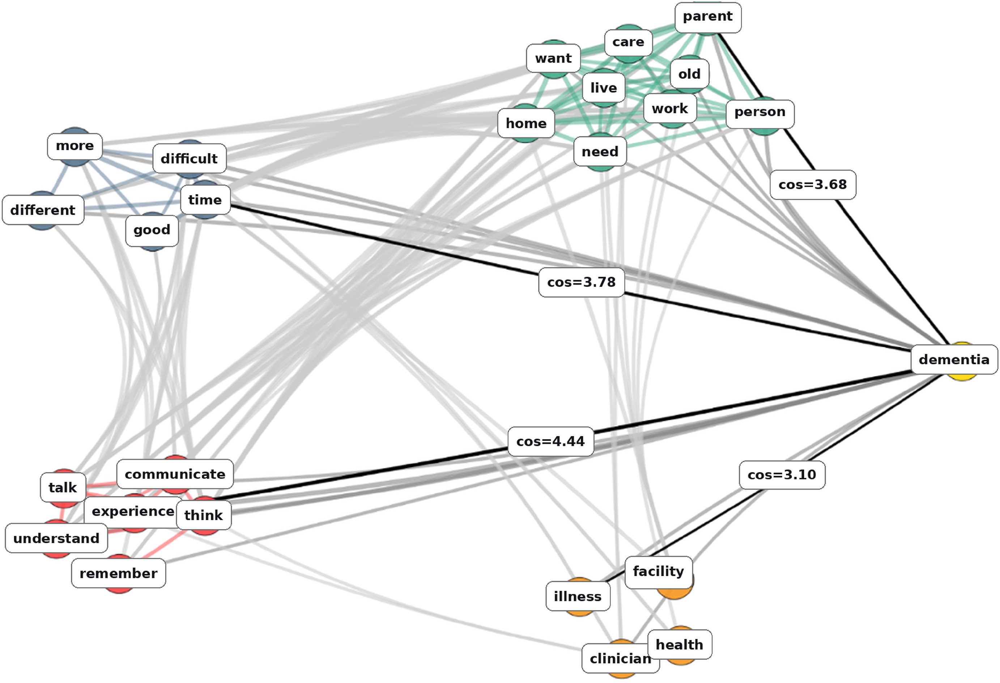

Making Sense of Dementia through Action: Lessons from Ethnography and Computational Social Science
September 2026
Alzheimer’s disease affects an estimated 7.4 million Americans aged 65 and older. The effects ripple through families: unpaid care for loved ones with Alzheimer’s and other dementias was valued at more than $446 billion in 2025.
To understand what this means in everyday life, our team carried out a four-year ethnography across three U.S. states, with over 300 site visits and 117 in-depth interviews in homes and communities. Our new article in Social Science & Medicine combines close analysis of these experiences with network maps of shared meanings in over 30,000 paragraphs of natural language.
We show people living with dementia and their care partners engaging in pragmatic sensemaking: drawing on medical frameworks and ideas about aging, relationships, and time to address concrete problems. Their responses challenged accounts that reduce dementia to “loss” or a “journey,” often emphasizing how it could be both at once.
Alongside the hardship of lost memory, people described happiness, friendship, collective coping and innovation. One assisted living resident called recalling names with friends “memory by committee.” Some families described both the pain of watching loved ones change and gratitude for time together.
Wealth, geography, access to specialists, and social support also shaped what was possible. People drew on understandings that helped them cope, learning from others facing similar challenges to identify reasonable responses they could carry out.
In everyday life, families face brain changes, shifting relationships, and demands as intertwined, even as academic fields parse them. As we note in the article, life with dementia often forces families to “work across institutional silos while managing challenges spanning multiple domains.”
Supporting families affected by dementia requires understanding shared experiences, addressing unevenly distributed barriers that limit options, as well as continuing to work towards effective diagnosis and treatment. We might also improve interventions by learning from how they reason through this complexity. The people in this work showed how life alongside dementia is medical, social, economic, and psychological at once.
With much gratitude to the people who shared their joys and tribulations, and the team who worked so hard on this project.

- Key: Orange = Health and Medicine
- Red = Social Cognition
- Teal = Social Roles
- Gray = Change over Time
- Yellow = Seed word
- Edges (lines) = Concept co-occurrence
- Black lines = Strongest cross-category connection
- Normalized cosine similarity with reweighted co-occurrence vectors, on a 1–5 scale.
Article:
Abramson, Corey M., Kieran L. Turner, Ignacia Arteaga, Alma Hernández de Jesús, Brandi Ginn, Yuhan Nian, and Daniel Dohan. 2026. “Pragmatic Sensemaking: Mapping the Cultural Work of People Living with Dementia and Their Care-Partners.” Social Science & Medicine 409:119829.
https://doi.org/10.1016/j.socscimed.2026.119829